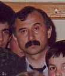

Ο δάσκαλος της νέας γενιάς ψαλτών της Ηλείας / The "father" of the modern generation
of psaltai in Ilia, Greece

(the following is my translation from a book called "Byzantine Ecclesiastike Mousike
kai Psalmodia" by F. Oikonomou with biographies of Greek psaltai)
"Distinguished nice-voiced Protopsaltis and teacher of Byzantine Music. He was born
in Vounargon, a village close to Pyrgos (Ilia, Greece). From a very young age he
stood out for his impressive voice and his talent in the Psaltic Art. He got his
first lessons on the analogion, close to the Protopsaltis of Pyrgos, George
Lainas. Later on, he studied with other well known Protopsaltai such as Dimitrios
Mitrou, Kyriazis Kyriazis and finally with Harilaos Taliadoros. He studied at the
National Conservatorium of Greece ("Ethnikon Odeion") from where he received his
degree of a teacher of Byzantine Music. Since 15 years ago, he teaches the Psaltic
Art in the school of Byzantine Music of the Holy Metropolis of Ilia. Many of his
students are now sucessfully serving as competent psaltai in churches of the
Holy Metropolis of Ilia and elsewhere. He has chanted in many churches and today
he honours the holy right analogion of the cathedral of St Nicholas of Pyrgos. He
has got many admirers and fans-immitators of his art.
A wonderful person, modest with integrity and virtue, with rich spiritual gifts,
he enjoys everybody's respect and love. An excellent chanter with nice,
melodic and captivating voice and with serious, ecclesiastical expression ("yphos"),
he chants with modestly and reverence and serves with piety and dedication our liturgical
tradition."
D. Koubaroulis:
Kounas was also the first to establish a children's choir in the Metropolis of Ilia
which gave many concerts with great success in local parishes and halls of the Metropolis.
Below is a sample from one of the concerts. The choir was taken over by his student
George Papageorgiou who continues to direct it sucessfully up to this day.
His students are now running the school of Byzantine Music of the Metropolis which
numbers some 150 students, some of them with exceptional talent.
His teaching style was aimed primarily at children which he encouraged to go to
the analogion and chant with him. He never expelled any kid from the analogion.
He always let kids chant few simple pieces per service. At almost every service
there used to be 2-3 kids at the analogion.
He used to teach 3-4 days a week at two different parishes, many classes in an evening.
Adults and kids, often together, but always paying attention to the children.
He did many radio broadcasts with Byzantine music. For some time, he ran a weekly
half-hourly radio program with Byzantine hymns chanted by his children pupils.
His teaching style consisted of a full practical (listen/study/repeat) first years
leaving theory for later. He characteristically used to reply to theoretical questions
with "You will learn these later...".
He stopped teaching prematurely at his prime time due to vocal strain but he continues
to chant as Protopsaltis of the cathedral up to this day. Below is a recent
sample of him chanting "Ton Despotin" in Varys mode.
From his students we mention the current Lambadarios of the cathedral of Pyrgos
Ilia, Mr George Papageorgiou, the Protopsaltis of St Nicholas, Spata, Ilia,
Mr. George Stathopoulos, the Lambadarios of the cathedral of Sydney, Australia,
Dr. D. Koubaroulis and many others who are now chanting and teaching Psaltiki in
Greece and abroad.
Recordings
Angelos Kounas (Pyrgos, Ilia, 2005)
Angelos-Kounas-TonDespotin.mp3 Varys Mode, ancient (old) melody.
A historic recording of the Patriarchal Axion Estin (the first of a children's
Byzantine choir)
Youth Choir of the Holy Metrolpolis of Ilia Greece [520 Kb, mp3]
under the direction of A. Kounas
All psaltai (excl isokrates) are between 6 -13 yrs old.
(from a private live concert recording in 1990, Pyrgos, Ilias, Greece)
The following 3 recordings are from Christmas 2004 in Pyrgos, Ilia, Greece:
Katavasia "Mysterion Ksenon"
First mode [
mp3, 732 Kb]
Dynamis "Osoi Eis Christon" (K. Pringou)
First mode [
mp3, 780 Kb]
Idiomelo "Efrenesthe Dikaioi"
Legetos mode [
mp3, 390 Kb]